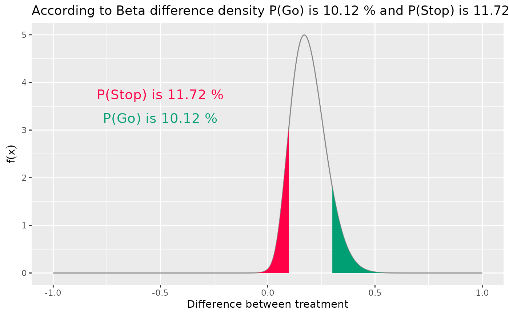
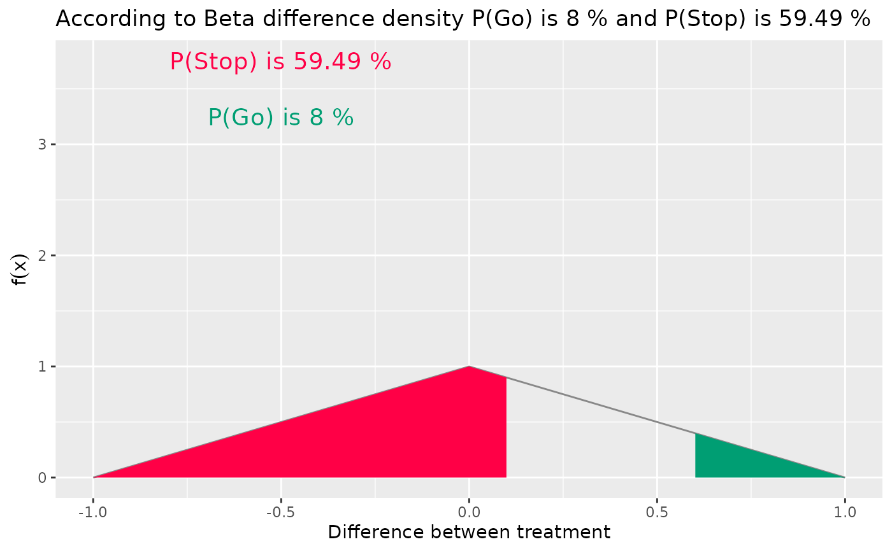

This function will plot the PDF of a difference between two Beta distributions
Arguments
- parX
(
numeric):
non-negative parameters of the control Beta distribution- parY
(
numeric):
non-negative parameters of the treatment Beta distribution.- go_cut
(
number):
a meaningful improvement threshold, the lower boundary of a meaningfully improvement in response rate- stop_cut
(
number):
a poor improvement threshold, the upper boundary of a meaningfully poor improvement in response rate- shade
(
flag):
paint the two areas under the curve, default value = TRUE- note
(
flag):
show values of the colored area, default value = TRUE
Examples
# The beta distribution and acceptable bounds for
# a meaningful improvement of 0.30 and worsening of 0.1
parX <- c(1, 52) # Control group's parameters
parY <- c(5.5, 20.5) # Treatment group's parameters
plotBetaDiff(
parX = parX,
parY = parY,
go_cut = 0.3,
stop_cut = 0.1, # below a difference of 10%, is an unsuccessful trial
shade = TRUE,
note = TRUE
)

# a larger go_cut with uniform prior
plotBetaDiff(
parX = c(1, 1), # Control group's parameters
parY = c(1, 1), # Treatment group's parameters
go_cut = 0.6,
stop_cut = 0.1,
shade = TRUE,
note = TRUE
)
